Döngüler
- for Döngüsü
En çok kullanılan döngüdür. Bir değişken için tanımladığımız koşul içindeki komutlar döngü tamamlanıncaya kadar çalışır.
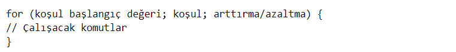Şeklinde algoritması vardır. Şimdi bu algoritmanın nasıl çalıştığını bir örnek ile özetleyelim.
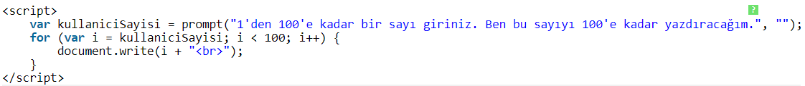Şeklinde bir döngümüz olsun. Kullanıcı sayısını i değişkenine atadık. i ise 100'e kadar birer birer artacak. Yazdırırken ise
etiketi ile bunu alt alta yazdıracağız.
Kodlarımı çalıştırdım ve örnek olarak "89" sayısını girdim.
Ekran çıktım ise bu şekilde olacaktır. Eğer benim gibi zibidilik yapmak istiyorsanız girilen değere "-999999" gibi sayılar verebilirsiniz. İşlemcinizin pasını atarsınız.
- while Döngüsü
for döngüsü ile aynı işlemleri yapar. Birkaç küçük sözdizimi farkı vardır. Değişken döngüden önce tanımlanır. Parantez içerisine sadece koşul yazılır ve arttırma/azaltma işlemleri yazdırma işleminden sonra yapılır.
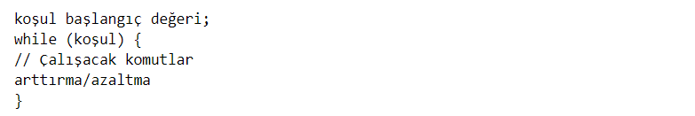Şeklinde bir algoritması vardır. Şimdi aynı örneğimizi while döngüsü ile yapalım.
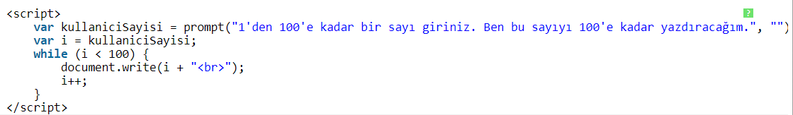Bu sefer kullanıcı sayısını "i" değişkenime aktardım. Daha sonra döngümü yazdım. Dikkat ederseniz arttırma işlemini yazdırdıktan sonra yapıyorum.
Test amacıyla "92" değerini girdim.
Ekran çıktım bu şekilde olacaktır.
- do ... while Döngüsü
while döngüsüne çok benzer. Tek farkı koşul doğru olsun ya da olmasın döngü içersindeki komutların en az bir defa çalıştırılmasıdır.
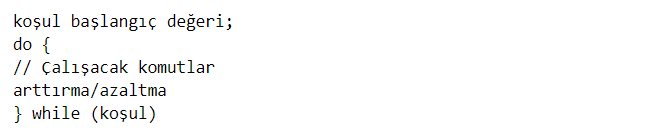Şeklinde bir söz dizimi vardır. Şimdi aynı örneğimizi do ... while ile yapalım.
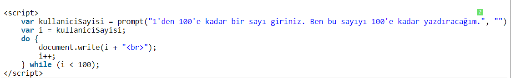Kodlarımı çalıştırıyorum. Bu sefer "94" değerini girdim.
Çıktımız ise bu şekilde olacaktır.
- Döngü Deyimleri
Döngüden çıkmak ya da döngü başına gitmek için kullanılan deyimlerdir.
- break Deyimi
Döngüyü durdurmaya, terk etmeye yarar. switch döngüsünde bunun nasıl kullanılacağını görmüştük. if else, else if koşullarında da kullanılabilir.
continue Deyimi
Bir döngü içerisinde çalıştırılmasını istemediğimiz yerlerde kullanırız. Bunu şöyle göstereyim:
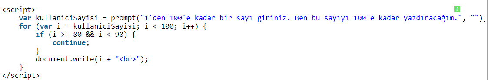Bu kodlarda 80 ve 90 arasındaki sayılar yazdırılmayacaktır. Örnek olarak "75" sayısını girdim.
Çıktımız ise bu şekilde olacaktır.
3. Fonksiyon Yapısı
- Parametresiz Fonksiyonlar
Parametresiz fonksiyonlar adından da anlaşılacağı gibi herhangi bir parametreye gerek duymadan ve fonksiyonda tanımlanan kodların yerine getirilmesi ile çalışan fonksiyonlardır.
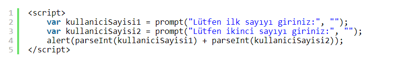Şeklinde kodlarımız olsun. Kodu çalıştırdığımızda ilk sayı için bir bilgi penceresi, ilk sayıyı girdikten sonra ise ikinci sayı için bir bilgi penceresi açılacak. İkinci sayıyı girdikten sonra ise sonuç, uyarı penceresi olarak yazdırılacak. parseInt( ) ise prompt fonksiyonu ile alınan string veriyi number veri türüne çevirecek. Unutulmamalıdır ki kullanıcıdan alınan veriler daima string türündedir.
Diyelim ki bu kodları bu sayfada kullandık. Fakat başka bir sayfada da kullanmak istiyoruz. Bunun için sil baştan üç satır kodu tekrar yazmayız. Fonksiyonumuzu tanımlarız ve kendi oluşturduğumuz js dosyasına yazarız ve js dosyasını da layout'umuza ekleriz. İşler bu şekilde yürüyor.
Şimdi ilk parametresiz fonksiyonumuzu yazalım.
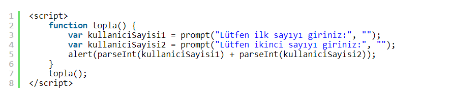İşte fonksiyon tanımlamak bu kadar basit. function yazdıktan sonra fonksiyon adımı verdim ve scope alanına çalışmasını istediğim kodları yazdım. Sonrasında da topla() fonksiyonumu çalıştırdım. Fonksiyonumu dahili bir js dosyasında tanımlarsam projemin istediğim sayfasında kullanabilirim.
Parametreli Fonksiyonlar
Kod yazarken iki değeri kısa bir şekilde toplamak istiyoruz diyelim. Ve bu kodları başka sayfalarda da kullanacağız. Bunun için aşağıdaki gibi parametreli bir fonksiyon tanımlamamız yeterlidir.
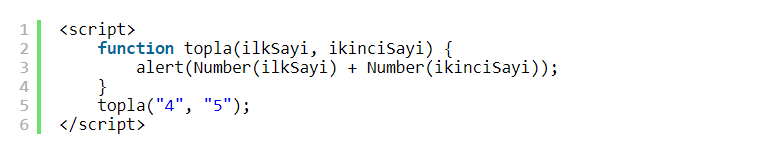ilkSayi ve ikinciSayi şeklinde iki parametresi olan topla isimli bir fonksiyon tanımladım. Number( ) fonksiyonu ile bu iki parametreyi number veri türüne çevirdim. Kodlarımı çalıştırdığım zaman "9" yanıtını alacağım.
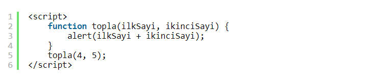Bu kodları daha kısa bir şekilde de yazabilirim. Sadece Number( ) fonksiyonunu öğrenmeniz amacıyla ilk örneği verdim.
return Deyimi
Bazen kodlarımızda çalışmasını istemediğimiz alanlar olabilir. Hatırlarsanız bir önceki dersimizde continue deyimini kullanmıştık. continue'da çalışmasını istemediğimiz kodlar çalışmaz; fakat geri kalan kodlar çalışır. return'de ise kodların çalışmasını istemediğimiz kısmına gelindiğinde fonksiyondan çıkılır ve altındaki kodları çalıştırmaz. Aralarında böyle bir fark vardır.
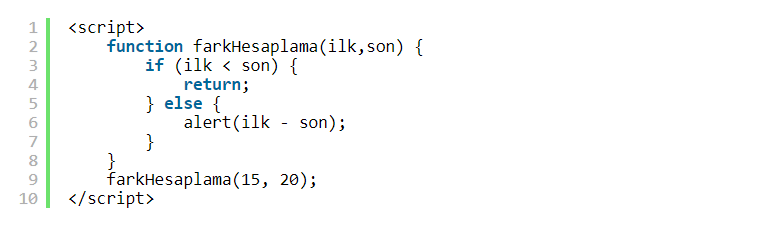Fark hesabı yapan bir fonksiyon yazdım. Eğer ilk değer, ikinci değerden küçükse fonksiyondan çıkacağım. Değilse sonu yazdıracağım.

Bu fonksiyonu bu şekilde bir uyarıyla da yazabilirsiniz.
Hazır Fonksiyonlar
Bu dersimize kadar write( ), alert( ), prompt( ), sup( ), concat( ) gibi birçok hazır fonksiyon gördük. Hazır fonksiyonlar kod yazımında kolaylık sağlayan JavaScript ile hazır gelen fonksiyon gruplarıdır. Şimdi birkaç tanesini daha öğrenelim.
eval( ): Değişkenin türünü algılayıp dönüştürme (convert) işlemi yapar.
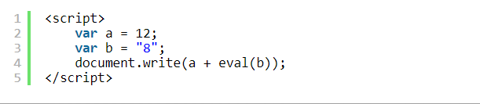a değişkenim number, b değişkenim ise string veri türünde. eval( ) fonksiyonu ile iki değeri topladığımda "20" yanıtını aldım. eval( ), b değişkeninin bir string olduğunu anladı ve onu number veri türüne çevirdi. Eğer eval( ) kullanmasaydım "128" yanıtını alacaktım ve sadece string birleştirme yapmış olacaktı.
parseInt( ) ve parseFloat : parseInt( ) veriyi integer türüne yani tamsayı türüne dönüştürür. parseFloat( ) ise ondalıklı sayıya dönüştürme işlemi yapar.
String( ) ve Number( ) : String( ) veriyi string türüne, Number( ) ise number türüne dönüştürür.